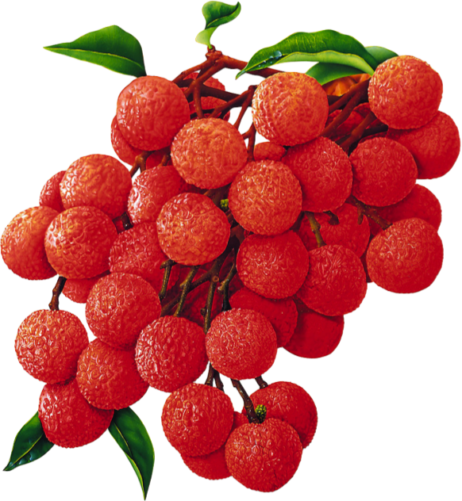

About
LICHeE is designed to reconstruct multi-sample cell lineage trees and infer the subclonal composition of the given samples based on variant allele frequencies (VAFs) of deep-sequencing somatic single nucleotide variants (SSNVs). The program accepts as input a list of SSNVs with specified per-sample VAFs and outputs the inferred cell lineage tree(s) and the sample subclone decomposition. It provides a simple GUI to allow users to interact with the trees dynamically.For more information about the algorithm please see the following publication:
Popic V, Salari R, Hajirasouliha I, Kashef-Haghighi D, West RB, Batzoglou S.
Fast and scalable inference of multi-sample cancer lineages. Genome Biology 2015, 16:91
Program Parameters
For best results users are advised to
explore the parameters exposed by
the method and customize them to their specific datasets. COMMANDS
-build lineage tree reconstruction
INPUT/OUTPUT AND DISPLAY OPTIONS
-i <arg> Input file path (required)
-o <arg> Output file path where the results should be written (default: input file name with the suffix .trees)
-cp Input data represents cell prevalence (CP) values (as opposed to default VAF values)
-sampleProfile Input file contains the SSNV sample presence-absence profile (this will disable the default SSNV calling step)
-n,--normal Normal sample column id in the list of samples, 0-based (e.g. 0 is the first column) (required*)
-clustersFile SSNV clusters file path
-s,--save <arg> Maximum number of output trees to save, if any (default: 1)
-net,--showNetwork Display the constraint network
-tree,--showTree <arg> Display the top ranking lineage tree(s) (default: 1)
SSNV FILTERING AND CALLING
-maxVAFAbsent,--absent <arg> Maximum VAF to consider an SSNV as robustly absent from a sample (required*)
-minVAFPresent,--present <arg> Minimum VAF to consider an SSNV as robustly present in a sample (required*)
-maxVAFValid <arg> Maximum allowed VAF in a sample (default: 0.6)
-minProfileSupport <arg> Minimum number of robust** SSNVs required for a group presence-absence profile to be labeled robust during SNV calling: SNVs from non-robust groups can be re-assigned to existing robust groups (default: 2)
* these parameters are required unless the -sampleProfile option is specified
** robust SNVs have VAFs < maxVAFAbsent or > minVAFPresent across all the samples
PHYLOGENETIC NETWORK CONSTRUCTION AND TREE SEARCH
-minClusterSize <arg> Minimum number of SSNVs required per cluster (default: 2)
-minPrivateClusterSize <arg> Minimum number of SSNVs required for a private cluster (i.e. with SSNVs occurring only in one sample) (default: 1)
-minRobustNodeSupport <arg Minimum number of robust SSNVs required for a node to be labeled robust during tree search: non-robust nodes can be removed from the network when no valid lineage trees are found (default: 2)
-maxClusterDist <arg> Maximum mean VAF difference on average per sample up to which two SSNV clusters can be collapsed (default: 0.2)
-c,--completeNetwork Add all possible edges to the constraint network, by default private nodes are connected only to closest level parents and only nodes with no other parents are descendants of root
-e <arg> VAF error margin (default: 0.1)
-nTreeQPCheck <arg> Number of top-ranking trees the QP consistency check is run on, we have not seen this check to fail in practice (default: 0, for best performance)
OTHER
-v,--verbose Verbose mode, prints more information about each step of the algorithm
-h,--help Print program usage information
How to Run
From the /release directory:./lichee -build -i <input_file_path> [-minVAFPresent <VAF1> -maxVAFAbsent <VAF2> -n <normal_sample_id>] [other options]
Examples
From the /release directory (for
other command-line settings used on the ccRCC and HGSC datasets see the
README file in the data/ directory): # Show the top ranking tree
./lichee -build -i ../data/ccRCC/RK26.txt -maxVAFAbsent 0.005 -minVAFPresent 0.005 -n 0 -tree 1
# Eliminate private clusters/nodes that have fewer than 2 SSNVs, show and save to file the top-ranking tree
./lichee -build -i ../data/ccRCC/RMH008.txt -maxVAFAbsent 0.005 -minVAFPresent 0.005 -n 0 -minPrivateClusterSize 2 -tree 1 -s 1
# Reduce the VAF cluster centroid distance, which determines when the clusters are collapsed
./lichee -build -i ../data/hgsc/case6.txt -maxVAFAbsent 0.005 -minVAFPresent 0.01 -n 0 -maxClusterDist 0.1 -tree 1
Input File Types
LICHeE accepts three different file format types. The main file format is composed of a list of SSNVs with their associated VAF or CP values per sample: one SSNV entry per line.The file contains the following header with fields separated by tabs:
#chr position description <sample names separated by tabs>
For example (the following file contains 5 samples and 3 SSNVs):
#chr position description Normal S1 S2 S3 S4
17 123456 A/T DUSP19 0.0 0.1 0.2 0.25 0.15
11 341567 C/G MUC16 0.0 0.4 0.09 0.38 0.24
9 787834 A/C OR2A14 0.0 0.35 0.14 0.17 0.48
Users can also optionally provide pre-computed SSNV calls per sample, by adding one more column to the above format before the sample frequency information,
which can specify the binary presence-absence pattern of this SSNV across samples. For example, for a file with 5 samples, a pattern of 01001 implies
that the SSNV was called in the second and fifth sample (column id 1 and 4, since we start counting at 0).
In order to use this file type (and disable the default calling mechanism), users should include the -sampleProfile flag.
An example is shown below:
#chr position description profile Normal S1 S2 S3 S4
1 184306474 A/G HMCN1 01111 0.0 0.1 0.2 0.25 0.15
1 18534005 C/A IGSF21 01111 0.0 0.1 0.25 0.2 0.1
1 110456920 G/A UBL4B 01111 0.0 0.4 0.4 0.45 0.45
10 26503064 C/G MYO3A 01001 0.0 0.4 0.0 0.0 0.24
Finally, users can also specify pre-computed SSNV clustering information by providing an additional input file
containing the clusters (with the corresponding centroid VAFs per sample and the member SSNVs): one cluster per line.
The file should contain the following fields separated by tabs (corresponding to the primary SSNV input file):
profile <cluster VAFs per sample separated by tabs> <comma-separated list of SSNVs>
For example (the following file contains 3 clusters for the SSNV example file shown above; the SSNVs are specified as line numbers in the SSNV input file ignoring the header line, starting from 1):
01111 0.0 0.1 0.23 0.23 0.13 1,2
01111 0.0 0.4 0.4 0.45 0.45 3
01001 0.0 0.4 0.0 0.0 0.24 4
Output Visualization
The resulting trees and sample decomposition information produced by LICHeE can be written to a text file (using the -s option that specifies up to how many top trees should be saved) and visualized via the simple GUI (using the -tree option that specifies how many trees should be displayed). The GUI allows users to dynamically remove nodes from the tree, collapse clusters of the same SSNV group, and see information about the SSNVs at each node and the sample breakdown.A few useful tips for working with the GUI: one or multiple nodes can be selected and dragged, the size and position of the graph can be adjusted using the trackpad, the Snapshot button can be used to capture the current state of the tree.